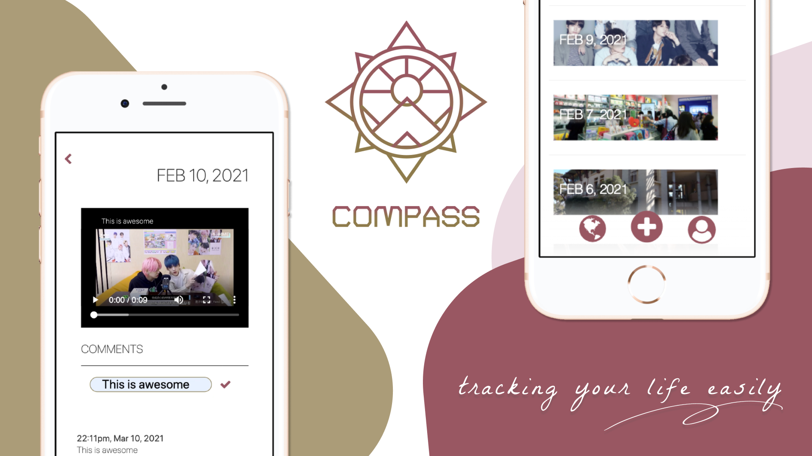
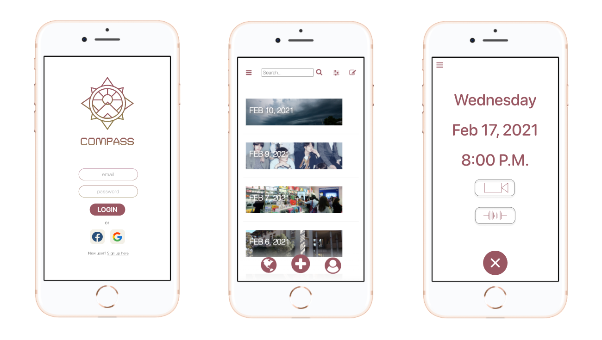
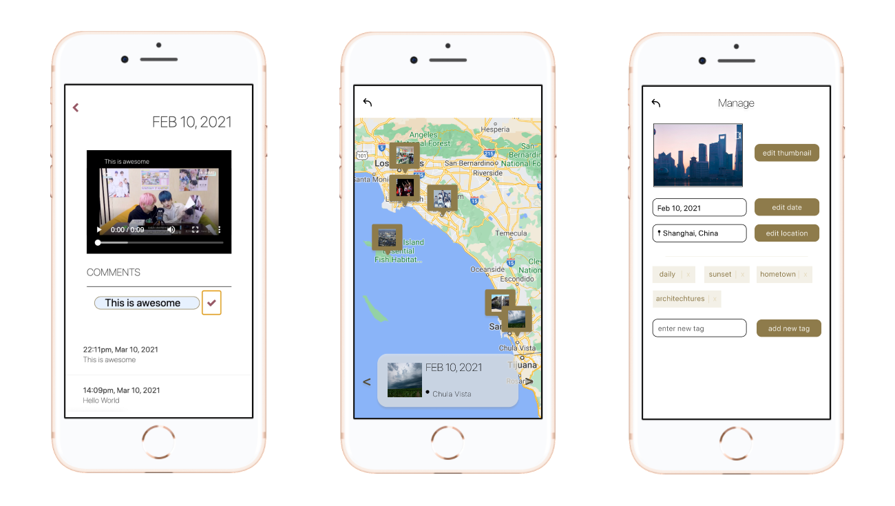

UX Designer and Developer
Jan 2021 - Mar 2021 (10 weeks)
Euphie Zhao, Danlin Jiang
In this project, we designed an app for digital journalling. With Compass, journaling is fast and secure. Self-tracking is hardly happening due to today’s fast pace of life, we believe that capturing moments of people’s life digitally offers a convenient way, assisting people to track and draw insights from their everyday life. Compass supports the functionality of recording videos and audios as diary entries and making comments on the past diary entries for reflections.

Currentlt, there are tools that provide users a faster way to keep journals. We did some research and found five alternatives.
Built-in camera and voice recorder on the phone
It provides users a way to digitally record clips and supports reviewing and self-tracking. With the built-in camera and voice recorder, users can record short video or audio clips and keep them as diary entries. This project is different from our app in that the diaries are not organized nor kept securely. There will be other photos and videos in the photo gallery and it will be hard for users to find and review previous entries.
App - Day One
Day one is an app where users can write texts, add photos, videos, voice recordings, files, and drawings to the journal entries. Users can review previous entries and see what they have done on that day, it supports photos, videos, voice recordings, drawings and even importing files, while our app focuses on only video and audio entries. Providing users different ways can be helpful but complicated as well.
App - Second Everyday
the main function of this app is making video diaries, and by having this function, it aims to create a way to help people self-track, which is the goal we are trying to accomplish with our app. While the video recording is the only function supported, Voice recording can be more straightforward and easier for those who are looking for a simple way to jot down their thoughts.
App - LiveJournal
it is aiming to provide users with an easy way to record moments of life. In LiveJournal, users can create entries using the camera or importing clips from the gallery, which is a function supported by our app too. LiveJournal is different from our app in that users need to post the entries. Although it supports the journaling functions, it is more like a community where users are sharing their experiences and stories rather than a private place for users to reflect on themselves.
App - Leap Second
In Leap Sound, users can make video entries for each day and combine entries from different days together. When playback, users can review the combined video and see what they have been doing. Users can collaborate with their friends and families to make the entry, which is a function that is not supported by our app. Collaboration can make it easy if users can make a video entry for a trip or an event that involves many people, but may not be necessary for users who only want to write diaries.
We started by designing the prototypes of our app. The two ways our allow supports users to record journal is recording video and audio entries. Users can also comment on their past entries and see all in a map mode. We also conducted user testings on two users and fixed potential isability errors on the prototypes.
 Here is a link of our current progress on implementation
https://cogs120-compass.herokuapp.com